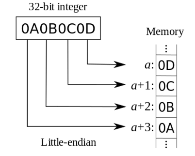
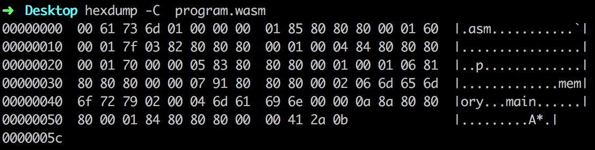
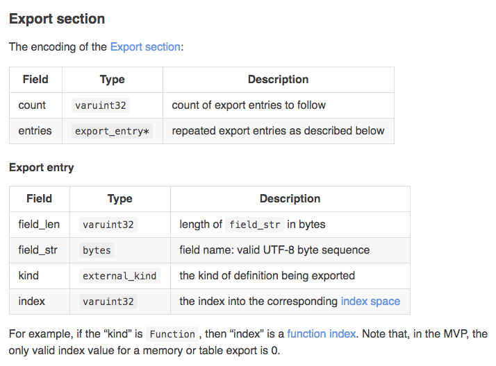
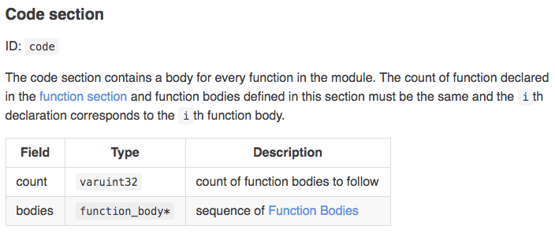
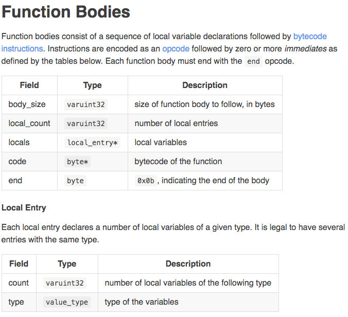

WebAssembly 深入研究报告 - 二进制编码
本篇报告我们来看一下 WebAssembly 的二进制编码格式。为什么 Wasm 会选择设计一种新的二进制编码格式，而不直接使用 ASM.js 的 ASCII 文本格式？Wasm 的 OpCode 操作码格式是怎样的？Wasm 模块在内存中的格式，以及用于验证模块的魔术字符是什么？
1、二进制编码的数字类型：

在 MVP 中用于编码 WebAssembly 二进制格式的数字类型有如下几种：整数类型 uint8、uint16、uint32，可以很直观的看出来这三种类型分别对应于无符号的8位、16位和32位整数。所有这几种整数类型在内存中都是以“小端字节序”的方式排列的，即低位字节排放在内存的低地址端，高位字节排放在内存的高地址端(如上图所示)。除了固定长度的整数外，Wasm 还支持基于小端字节序的 LEB128 可变长度编码，其无符号类型表示为varuint1、varuint7、varuint32，有符号类型表示为varint7、varint32、varint64。LEB128 编码以每7位为一个整体对一个二进制整数进行编码。首先将每7位组成一个字节，然后再根据是否还有后续字节，分别对该字节的最高位填入0或1，最后将这一系列的字节以小端字节序的方式存入内存。因此在解码 LEB128 编码的序列时要注意只有每个字节的最后7位才是有效数字。下面是一个无符号整数的 LEB128 编码例子。这几种数字编码类型都是用来编码 Wasm 原始二进制格式的。
10011000011101100101 In raw binary
010011000011101100101 Padded to a multiple of 7 bits
0100110 0001110 1100101 Split into 7-bit groups
00100110 10001110 11100101 Add high 1 bits on all but last group to form bytes
0x26 0x8E 0xE5 In hexadecimal
0xE5 0x8E 0x26 Output stream
2、指令操作码（OpCode）：
由于 MVP 的指令个数只有不到 256 个，因此 Wasm 的指令操作码现阶段全部编码为 1byte 的大小,在未来会通过增加 Pre-fixes 的方式来扩展更多的指令。OpCode 主要用在汇编程序解析汇编指令时，汇编程序会将对应的每条 ASM 指令转换成一个对应的 OpCode，以便计算机后续的指令执行。如下图所示是 PHP 中 OpCode 的组成格式（仅作为参考），每一个 OpCode 由六个数据域组成，并且其中只有 Code 域是必须存在的，其他均为可选域。
3、语言层次的类型：
我们可以在 WebAssembly 的可读文本格式 Wast 文件中查看一个 Wasm 模块在内存中的逻辑表示，模块的逻辑使用 “S 表达式”进行表达。在 Wast 中可以看到很多常用的类型标识，如下所示的代码：
(module
(import "env" "printInt" (func $printInt (param i32)))
(import "env" "printFloat" (func $printFloat (param f32)))
(import "env" "print" (func $print (param i32 i32)))
(memory $memory 1)
(data (i32.const 0) "")
(data (i32.const 1) "Hello World!")
(func $endl
(call $print (i32.const 0) (i32.const 1)))
(func $main
(call $printInt (i32.const 9))
(call $endl)
(call $printFloat (f32.const 6.28))
(call $endl)
(call $print (i32.const 1) (i32.const 12))
)
(export "main" (func $main))
(export "memory" (memory $memory))
)
比如上述 S 表达式中出现的 i32 和 f32，分别代表 Wasm 模块中的一个32位整数和一个32位浮点数。func 代表一个函数类型等。所有语言层面的类型在模块的二进制代码中都以一个负的 varint7 值作为每种类型编码值的第一位作为区分字符，其中的一部分类型如下表所示。
-0x01/0x7f i32
-0x02/0x7e i64
-0x03/0x7d f32
-0x04/0x7c f64
-0x10/0x70 anyfunc
-0x20/0x60 func
-0x40/0x40 block_type
4、模块结构：
int main() {
return 42;
}
我们将如上所示的 C/C++ 源码编译成一个 Wasm 模块，该模块对应的二进制内容如下所示（以十六进制表示）：
0061 736d 0100 0000 0185 8080 8000 0160
0001 7f03 8280 8080 0001 0004 8480 8080
0001 7000 0005 8380 8080 0001 0001 0681
8080 8000 0007 9180 8080 0002 066d 656d
6f72 7902 0004 6d61 696e 0000 0a8a 8080
8000 0184 8080 8000 0041 2a0b
接下来我们来看下该 Wasm 模块的二进制编码格式。首先，模块由两个前置字段作为整个模块的起始字段。第一个字段的内容为 0x6d736100，是 Wasm 模块的魔术字符，如果将该字段的内容转换成 ASCII 码格式可以发现其内容是 “**(null)asm**”。第二个字段指定了该模块的版本号，内容为 0x1。由于 Wasm 对其二进制格式的编码采用了小端字节序的方式，因此我们可以看到上述二进制编码的前两个字节恰好是魔术字符的最后两个字节。浏览器在解析 Wasm 的二进制格式时会把先读到二进制代码放入内存的低位空间，后续读取到的代码放到高位空间。版本之后的内容是由一个个“段”组成的。每个段首先以一个7位的 varuint7 类型 ID 作为起始，接下是一个变长的 varuint32 数代表了当前段以字节为单位的大小。我们也可以使用 hexdump 来直观的查看一个 Wasm 二进制模块的结构，使用命令：hexdump -C program.wasm，结果显示如下。

我们先根据每个 Section 的 ID 将整个模块的二进制代码分为如下所示的几个部分：
SectionNamae Seperator PayloadSize PayloadContent
Tpye 01 85 80 80 80 00 (5bytes) 01 60 00 01 7f
Function 03 82 80 80 80 00 (2bytes) 01 00
Table 04 84 80 80 80 00 (4bytes) 01 70 00 00
Memory 05 83 80 80 80 00 (3bytes) 01 00 01
Global 06 81 80 80 80 00 (1bytes) 0
Export 07 91 80 80 80 00 (17bytes) 02 06 6d 65 6d 6f 72 79 02 00 04 6d 61 69 6e 00 00
Code 0a 8a 80 80 80 00 (10bytes) 01 84 80 80 80 00 00 41 2a 0b
通过上面给出的分类表我们可以看到，根据每个 Section 的头部特征我们可以将整个二进制代码分解为除“魔术字符”和“版本号”外的多个“段”，每个“段”都有自己对应的功能和结构。由于我们的代码中没有引入自定义“段”，因此这里列出的该模块内所有“段”的 ID 均不为0。这样每个“段”的内容均只包含三个字段部分：”段ID”、“段大小”以及“段内容”。在上面的表格中我将“段ID”和“段大小”两个字段的内容统一整合为一个 “Seperator” 字段。“Seperator” 字段的第一位代表了该“段”的类型，接下来的五位是一个 varuint32 类型，代表了该“段”内容部分的长度。比如第一个 Type “段”的“段大小”字段值为5，因此接下来的5个比特均为该“段”的“段内容”数据。
每个不同类型的“段”所对应的“段内容”又对应着不同的子结构，这里我们将以 Export 和 Code 两个段结构为例来进行讲解，其他类型的段结构分析方式基本类似。

如上图所示的 Export Section 的“段内容”结构。一个 Export Section 结构被分为两部分：第一部分为 Export Entity 的个数，第二部分为对应的 Export Entity 实体内容。我们可以根据上图将该 Wasm 模块的 Export Section 分为如下部分。该模块需要导出的对象有两个，每个导出对象的实体又分别对应着“域标志长度”、“域标示”、“域类型“和”域索引“。
Export Entity 个数: 02
第一个 Export Entity 结构: 06 6d 65 6d 6f 72 79 02 00
第二个 Export Entity 结构: 04 6d 61 69 6e 00 00
接着我们对第一个 Export Entity 再进行分解，结果如下所示。该 Export Entity 的”域标志长度“为6，因此接下来的6个比特为该 Export Entity 的”域标志“，其内容对应的 ASCII 码为 ”memory“。域类型02代表着 Memory 类型。域索引值为0。以此类推，第二个 Export Entity 其实就是我们在 C/C++ 源码中导出的 main 函数，其”域标志“对应的 ASCII 码为 ”main“，域类型00代表着 Function 类型，域索引值为0。接下来我们再来看 Code Section 的结构。
域标志的长度: 06
域标示: 6d 65 6d 6f 72 79
域类型: 02
域索引: 00

Code Section 代表着导出函数的函数体内容，该“段”对应的函数个数要与 Function Section 相对应。可以看到在 Function Section 中得到的该模块的导出函数个数为1，因此对应的 Code Section 中只有一个函数体的内容。同时，Code Section 中的第 i 个函数体定义也要对应着 Type Section 中的第 i 个函数签名（Type Section 中定义了各个函数的函数、参数和返回值类型）。根据 Code Section 的结构我们得到如下分析结果。
函数体的内容: 84 80 80 80 00 00 41 2a 0b
函数体的大小: 84 80 80 80 00
本地变量个数: 00
函数体的代码: 41 2a
函数结束标志: 0b

其中的“函数体代码”便是我们在 main 函数中写的返回语句 return 42。其他部分可以根据上图给出的 Function Section 字段进行一一对应。再回过头来看，Type Section 的最后一个字段表示对应函数的返回值类型。这里可以看到该模块的唯一一个函数的返回值是 “7f” 类型。再结合我们之前讲过的 Wasm 模块在语言层面的类型可以知道这是一个 i32（32位整数）类型的值。